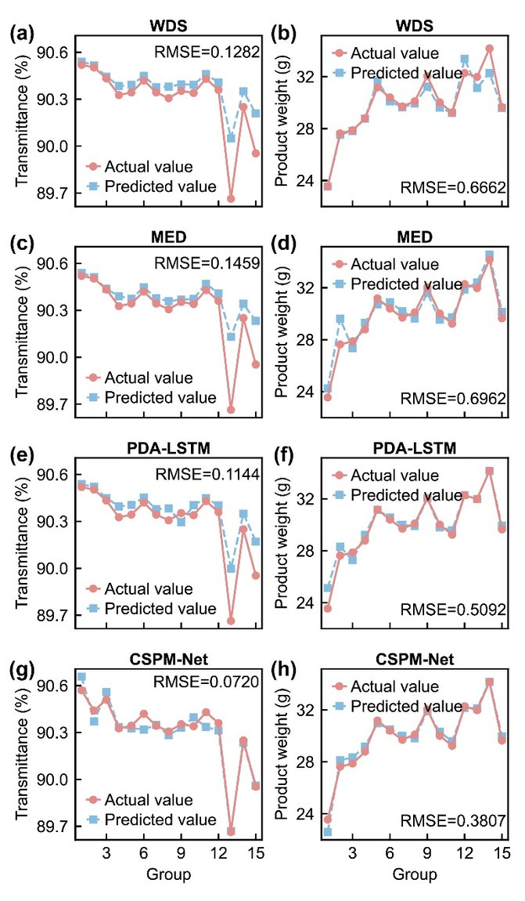
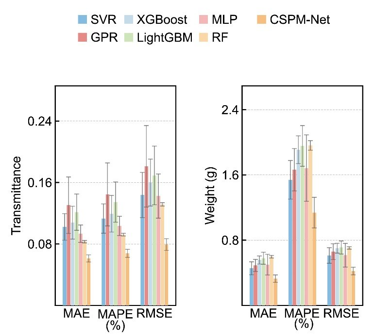
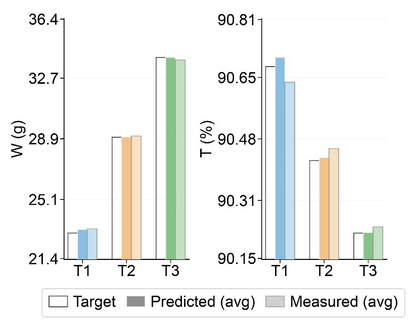
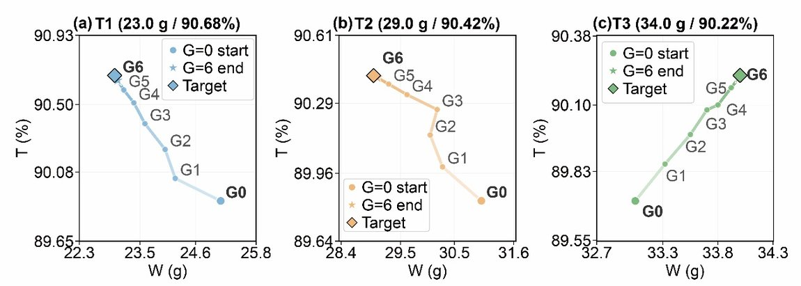

生产前产品质量智能预测（CSPM-Net）Pre-production Quality Prediction (CSPM-Net)
针对"开机前只有工艺参数、没有当前批次传感器数据时如何预测产品质量"的难题，提出跨模态阶段感知过程记忆网络 CSPM-Net：把历史批次丰富的传感器知识压缩成"可被参数查询的过程记忆"，再用阶段分割 + 时序注意力 + 跨模态交叉注意力机制，让新批次仅凭参数设定就能检索相关历史经验做生产前(pre-cycle)质量预测；在 PC 数据集上透光率/重量 RMSE 较最强基线分别降 36.3% / 22.1%。For predicting quality before startup—when only parameters exist and current-cycle sensor data is unavailable—CSPM-Net (cross-modal, stage-aware process-memory network) compresses rich historical sensor knowledge into a parameter-queryable process memory and uses stage segmentation + temporal attention + cross-modal cross-attention so a new batch can retrieve relevant history for pre-cycle prediction; on PC it cuts transmittance/weight RMSE by 36.3% / 22.1% vs. the strongest baseline.
背景Background
多相批次制造中质检存在大时延、无法实时反馈；开机前缺当前周期传感器数据，只能依靠历史数据提前预测质量。In multiphase batch manufacturing, inspection lags with no real-time feedback; before startup there is no current-cycle sensor data, so prediction must rely on history.
方法 / 我的工作Method / My Work
- 过程记忆库：把历史批次的传感器时序知识压缩为"可被参数查询"的记忆表示，新批次用参数作为查询键检索相似历史经验。Process memory bank: compress historical sensor time-series into a parameter-queryable memory; a new batch uses its parameters as the query key to retrieve similar past experience.
- 阶段分割：用一致性断点方法把过程按工艺阶段切分（分割精度 >99%），区分各阶段模式。Stage segmentation: a consistency-breakpoint method splits the process by phase (>99% accuracy) to separate per-stage patterns.
- 注意力机制：用时序注意力定位关键时间步、用跨模态交叉注意力把"参数模态"与"传感器记忆模态"对齐，实现仅凭参数的开机前预测。Attention: temporal attention locates key time steps and cross-modal cross-attention aligns the "parameter" and "sensor-memory" modalities for parameter-only pre-cycle prediction.
结果与亮点Results & Highlights
- PC 数据集透光率/重量 RMSE 较最强基线降 36.3% / 22.1%；PMMA 一致提升。On PC, transmittance/weight RMSE down 36.3% / 22.1% vs. the best baseline; consistent gains on PMMA.
- 推荐参数经 NSGA-II 多目标寻优后，在物理实验中产出接近目标的质量。After NSGA-II multi-objective search, recommended parameters yield near-target quality in physical experiments.
- 一作 SCI（AEI，IF 9.9，审稿中）+ 国家发明专利（已受理）。First-author SCI (AEI, IF 9.9, under review) + national patent (accepted).
方法框架与实验结果Framework & Experimental Results





本人角色：第一作者，主导方法设计、软件实现与实验；代码已开源（GitHub: JamaicaBoy/cspm-net）。My role: first author, leading the method, implementation and experiments; open-sourced (GitHub: JamaicaBoy/cspm-net).